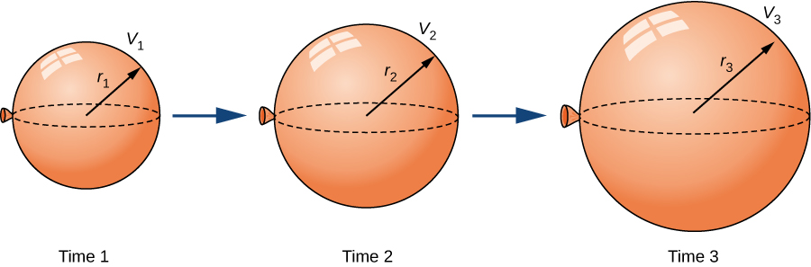

Example 4.1.1. Inflating a Balloon.
A spherical balloon is being filled with air at the constant rate of \(2\text{ cm}^3\text{/sec}\) (Figure 4.1.2). How fast is the radius increasing when the radius is \(3\text{ cm}\text{?}\)

Solution.
The volume of a sphere of radius \(r\) centimeters is
\begin{equation*}
V=\ds\frac{4}{3}\pi r^3\text{ cm}^3
\end{equation*}
Since the balloon is being filled with air, both the volume and the radius are functions of time. Therefore, \(t\) seconds after beginning to fill the balloon with air, the volume of air in the balloon is
\begin{equation*}
V(t)=\frac{4}{3}\pi\left[r(t)\right]^3\text{cm}^3
\end{equation*}
Differentiating both sides of this equation with respect to time and applying the chain rule, we see that the rate of change in the volume is related to the rate of change in the radius by the equation
\begin{equation*}
V'(t)=4\pi\left[r(t)\right]^3r'(t)
\end{equation*}
The balloon is being filled with air at the constant rate of \(2\text{ cm}^3\text{/sec}\text{,}\) so \(\ds V'(t)=2\text{ cm}^3\text{/sec}\text{.}\) Therefore,
\begin{equation*}
2\text{cm}^3\text{/sec}=\left(4\pi\left[r(t)\right]^2\text{ cm}^2\right)\cdot\left(r'(t)\text{ cm/s}\right)\text{,}
\end{equation*}
which implies
\begin{equation*}
r'(t)=\frac{1}{2\pi\left[r(t)\right]^2}\text{ cm/sec}\text{.}
\end{equation*}
When the radius \(r=3\text{ cm}\text{,}\)
\begin{equation*}
r'(t)=\frac{1}{18\pi}\text{cm/sec}\text{.}
\end{equation*}